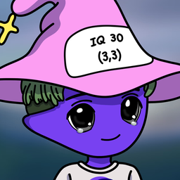

Welcome to Kiki
Create the next miracleCREATE THE NEXT MIRACLE

Hi, I'm Kiki. First, choose where Kiki should run:
Connect to another computer
Already running Kiki on the Mac mini at home? Use this one as the interface only. Both computers need Tailscale running.